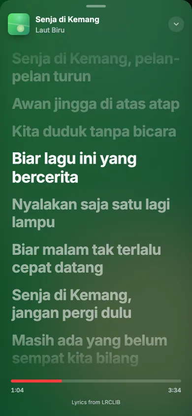
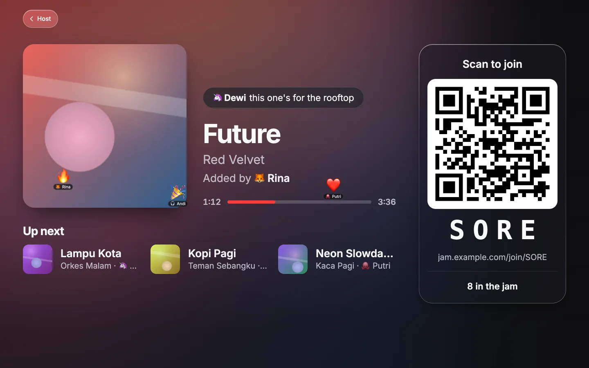

How it works




-
Scan. Pick a face. You’re in.
A nickname and one of twelve faces. No account, no app.
-
Find any song.
Search songs, videos and playlists, even by a line from the lyrics. Or share a link from YouTube Music.
-
Sing along.
When a song has timed lyrics, they follow it line by line.
-
Put it on the TV.
The song, what’s next, reactions and the QR code to join, big enough to read across the room.